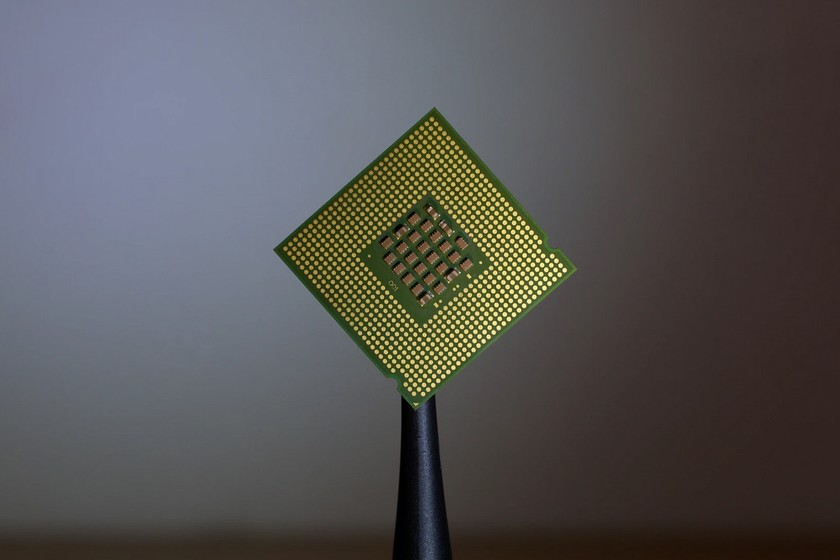

PROCESADORES DEL ORDEN DE THZ

Estos transistores son fabricados en una capa de silicio ultra-fina, en la parte superior de una capa incrustada de material aislante. Esta capa de silicio ultra-fina, está completamente empobrecida para crear un manejo máximo de la corriente que es conmutada cuando el transistor se enciende, permitiendo que el transistor tenga un encendido y apagado mucho más rápido.